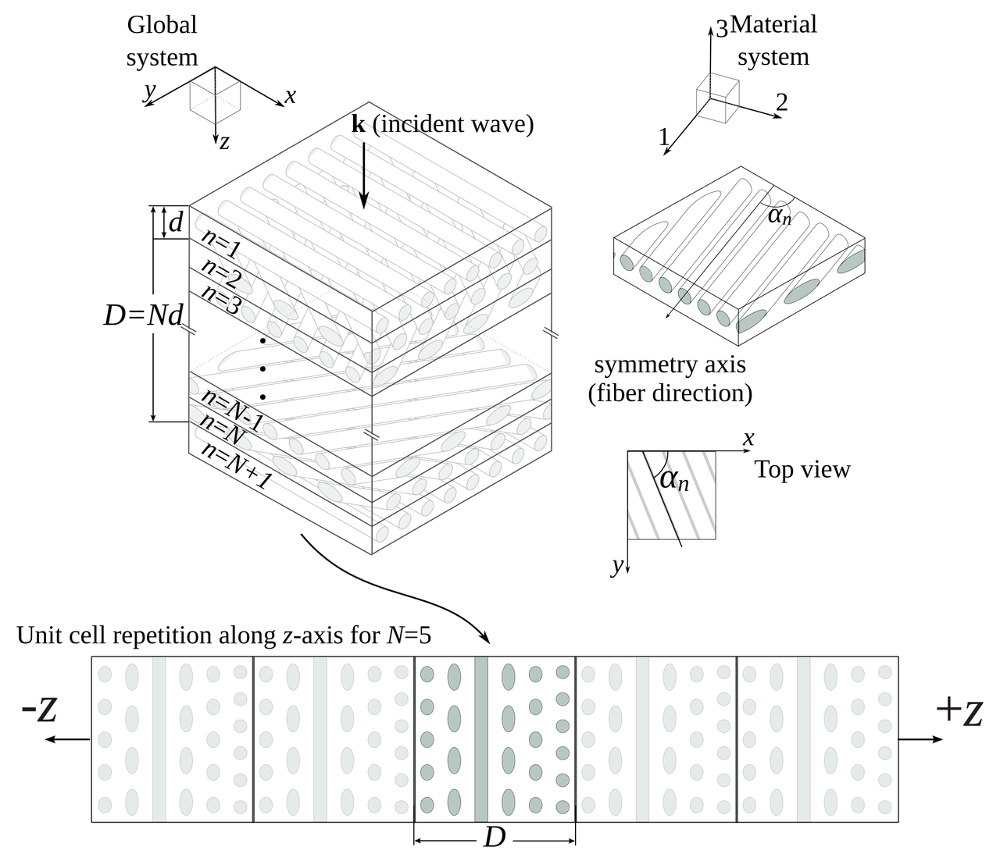

#SWDchallenge: Mejorando un gráfico
En storytelling with data tienen un reto mensual en visualización de datos llamado #SWDchallenge. La idea principal de los retos es poner a prueba las habilidades de visualización de datos y storytelling — contar historias atractivas para facilitar su entendimiento —.
Cada mes el reto tiene un tópico diferente. Este mes el reto era mejorar un gráfico existente. Yo decidí tomar un gráfico hecho por mí que fue publicado en un artículo en 2015.
El "original"
El gráfico original con el que vamos a empezar es el siguiente.

Este no es el gráfico original en el artículo de 2015 pero sirve el propósito del reto. Los datos se pueden descargar aquí. Este grafico presenta la fracción de energía transmitida (\(\eta\)) para un compuesto helicoidadl con diferentes parámetros geométricos. Los parámetros que se variaron fueron los siguientes:
Ángulo de rotación \(\alpha\): el ángulo formado entre capas consecutivas;
Grosor del compuesto \(D\), normalizdo por la longitud de onda \(\lambda\); y
Número de capas \(N\) en cada celda del compuesto.
El siguiente esquema ilustra estos parámetros.
Yo no diría que el gráfico es horrible, y, en comparación con lo que se encuentra en la literatura cientítica es incluso bueno. Pero … en tierra de ciegos, el tuerto es rey. Entonces, vamos a enumarara cada uno de los pecados del gráfico, y a corregirlos:
Tiene dos ejes horizontales.
La leyenda está encerrada en una recuadro que no es necesario.
Los ejes de la derecha y la parte superior no contribuyen al gráfico.
Las anotaciones están robando protagonismo a los datos.
Se ve desordenado con las líneas y los marcadores.
Es un gráfico espagueti.
El siguiente código genera este gráfico.
import numpy as np from matplotlib import pyplot as plt from matplotlib import rcParams rcParams['font.family'] = 'serif' rcParams['font.size'] = 16 rcParams['legend.fontsize'] = 15 rcParams['mathtext.fontset'] = 'cm' markers = ['o', '^', 'v', 's', '<', '>', 'd', '*', 'x', 'D', '+', 'H'] data = np.loadtxt("Energy_vs_D.csv", skiprows=1, delimiter=",") labels = np.loadtxt("Energy_vs_D.csv", skiprows=0, delimiter=",", usecols=range(1, 9)) labels = labels[0, :] fig = plt.figure() ax = plt.subplot(111) for cont in range(8): plt.plot(data[:, 0], data[:, cont + 1], marker=markers[cont], label=r"$D/\lambda={:.3g}$".format(labels[cont])) # First x-axis xticks, xlabels = plt.xticks() plt.xlabel(r"Number of layers - $N$", size=15) plt.ylabel(r"Fraction of Energy - $\eta$", size=15) ax.legend(loc='center left', bbox_to_anchor=(1, 0.5)) # Second x-axis ax2 = ax.twiny() ax2.set_xticks(xticks[2:]) ax2.set_xticklabels(180./xticks[2:]) plt.xlabel(r"Angle - $\alpha\ (^\circ)$", size=15) plt.tight_layout() plt.savefig("energy_vs_D_orig.svg") plt.savefig("energy_vs_D_orig.png", dpi=300)
Correcciones
Voy a reivindicar el gráfico un pecado a la vez, veamos cómo resulta.
Tiene dos ejes horizontales
Originalmente, agregue dos ejes horizontales para mostrar el número de capas y el ángulo de rotación al mismo tiempo. La recomendación general es evitar esto, así que vamos a deshacernos del eje superior.

Leyenda en un recuadro
Es claro a qué se refiere …

Ejes a la derecha y arriba
Quítemoslos

Las anotaciones están robando protagonismo
Vamos a desplazar las anotaciones hacia el fondo cambiando el color del texto a un gris claro.

Líneas y marcadores
Conservemos únicamente las líneas.

E incrementemos su grosor.

Es un gráfico espagueti
Creo que una buena opción para este gráfico sería resaltar una línea al tiempo. Haciendo esto, terminamos con el siguiente gráfico.

El siguiente bloque de código genera esta versión.
import numpy as np from matplotlib import pyplot as plt from matplotlib import rcParams # Plots setup gray = '#757575' plt.rcParams["mathtext.fontset"] = "cm" plt.rcParams["text.color"] = gray plt.rcParams["xtick.color"] = gray plt.rcParams["ytick.color"] = gray plt.rcParams["axes.labelcolor"] = gray plt.rcParams["axes.edgecolor"] = gray plt.rcParams["axes.spines.right"] = False plt.rcParams["axes.spines.top"] = False rcParams['font.family'] = 'serif' rcParams['mathtext.fontset'] = 'cm' def line_plots(data, highlight_line, title): plt.title(title) for cont, datum in enumerate(data[:, 1:].T): if cont == highlight_line: plt.plot(data[:, 0], datum, zorder=3, color="#984ea3", linewidth=2) else: plt.plot(data[:, 0], datum, zorder=2, color=gray, linewidth=1, alpha=0.5) data = np.loadtxt("Energy_vs_D.csv", skiprows=1, delimiter=",") labels = np.loadtxt("Energy_vs_D.csv", skiprows=0, delimiter=",", usecols=range(1, 9)) labels = labels[0, :] plt.close("all") plt.figure(figsize=(8, 4)) for cont in range(8): ax = plt.subplot(2, 4, cont + 1) title = r"$D/\lambda={:.3g}$".format(labels[cont]) line_plots(data, cont, title) plt.ylim(0.4, 1.0) if cont < 4: plt.xlabel("") ax.xaxis.set_ticks([]) ax.spines["bottom"].set_color("none") else: plt.xlabel(r"Number of layers - $N$") if cont % 4 > 0: ax.yaxis.set_ticks([]) ax.spines["left"].set_color("none") else: plt.ylabel(r"Fraction of Energy - $\eta$") plt.tight_layout() plt.savefig("energy_vs_D_7.svg") plt.savefig("energy_vs_D_7.png", dpi=300)
Ajustes finales
Añadimos algunos detalles en Inkscape para terminar con la siguiente versión.

Lecturas adicionales
Knaflic, Cole Nussbaumer. Storytelling with data: A data visualization guide for business professionals. John Wiley & Sons, 2015.
Nicolás Guarín-Zapata et al. "Shear wave filtering in naturally-occurring Bouligand structures." Acta biomaterialia 23 (2015): 11-20. Preprint: https://arxiv.org/pdf/1505.04203.pdf
Comentarios
Comments powered by Disqus